← os 5 modelos
Para escolher · 2026-10-14
Estúdio de visuais
Escolha um cesto , um cenário e um personagem . Toque numa ficha e a prévia ao lado já mostra a combinação no jogo de verdade. O cesto também muda a física, porque o slime toma a forma dele: o aquário redondo e a xícara têm a boca mais estreita, e o caldeirão faz a pilha rolar para o meio. Os prints usam a mesma partida para a comparação ser justa.
Cestos 8 formatos
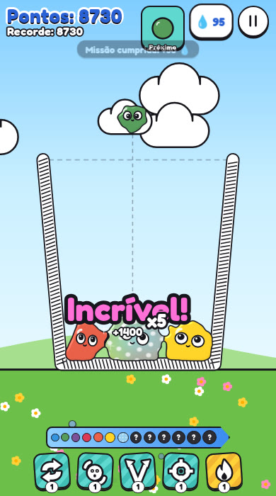
1 Pote listrado O do conceito: paredes retas e listradas, fácil de ler. 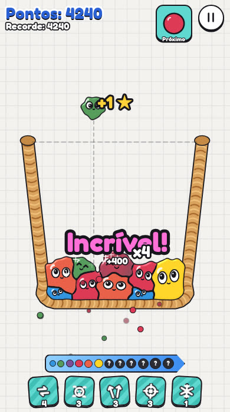
2 Cesta de vime Trançada à mão, cantos redondos e borda de trança. 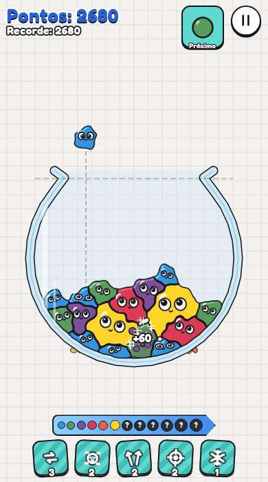
3 Aquário redondo Vidro com cascalho: o slime escorre pela curva. Boca estreita, mais difícil. 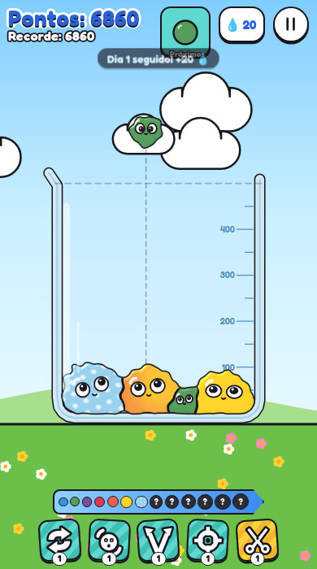
4 escolhido Béquer Vidro de laboratório com marcas de ml e reflexo na frente. 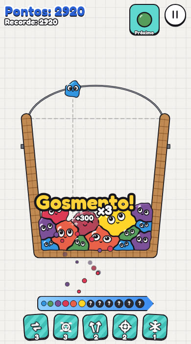
5 Balde de madeira Tábuas, aros de metal e alça de arame. 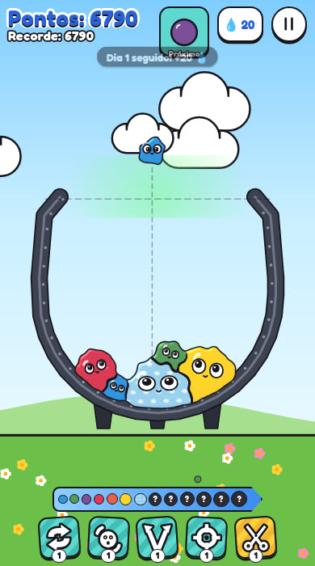
6 Caldeirão Ferro com pés e brilho verde. Fundo redondo: a pilha rola para o meio. 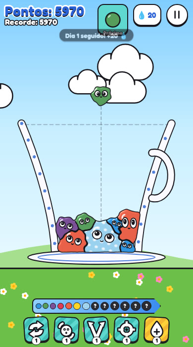
7 Xícara Porcelana com pires e alça. Fundo estreito, abre muito em cima. 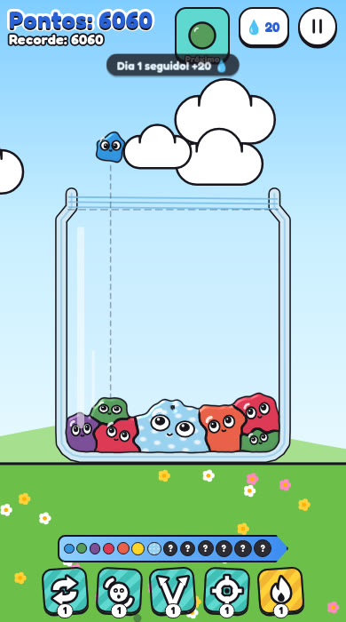
8 Pote de vidro Vidro com rosca e ombro na boca.
Cenários 8 lugares
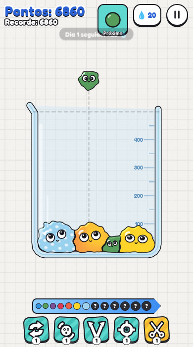
1 escolhido Caderno Papel quadriculado neutro: o slime é o destaque. 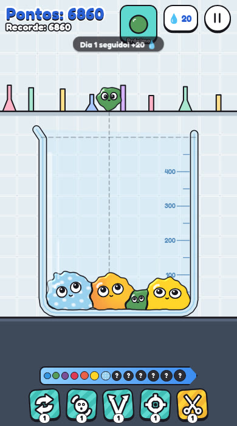
2 Laboratório Azulejos, bancada e uma prateleira de vidrarias. 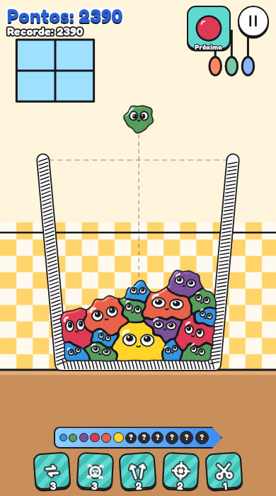
3 Cozinha Azulejo xadrez, janela e bancada de madeira. 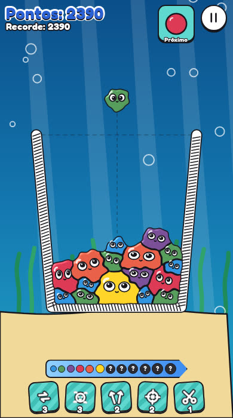
4 Fundo do mar Raios de luz, algas balançando e bolhas subindo. 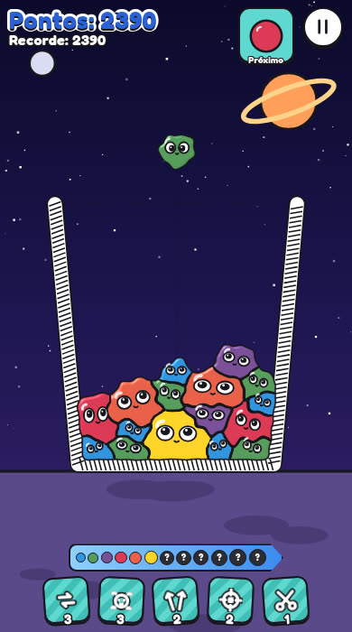
5 Espaço Estrelas piscando, planeta com anel e chão de crateras. 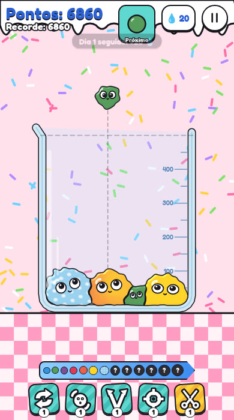
6 Doceria Granulado, cobertura escorrendo e piso xadrez rosa. 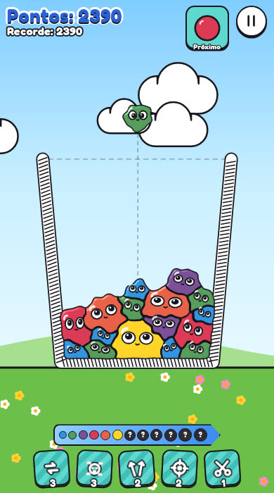
7 Jardim Céu com nuvens passando, morros e flores na grama. 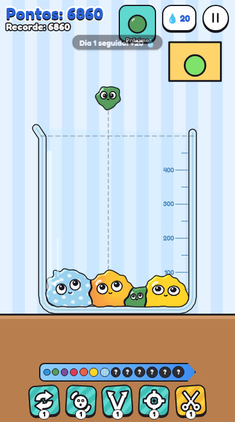
8 Quarto Papel de parede listrado, quadro e mesa de madeira.
Personagens 8 estilos
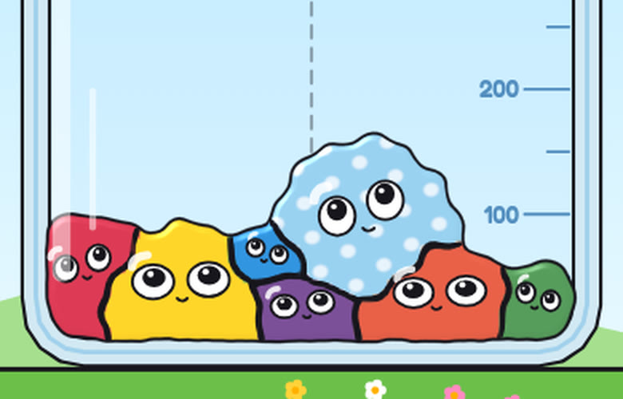
1 escolhido Clássico Olhos grandes que seguem o slime da vez. 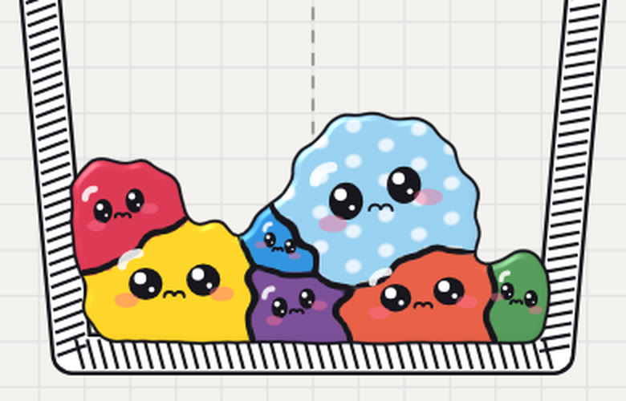
2 Kawaii Olhos com brilho, bochechas rosadas e boquinha. 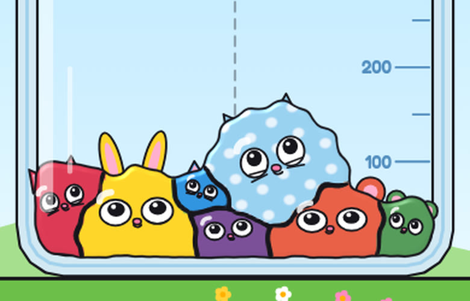
3 Bichinhos Orelhas de gato, urso ou coelho conforme o nível, com focinho. 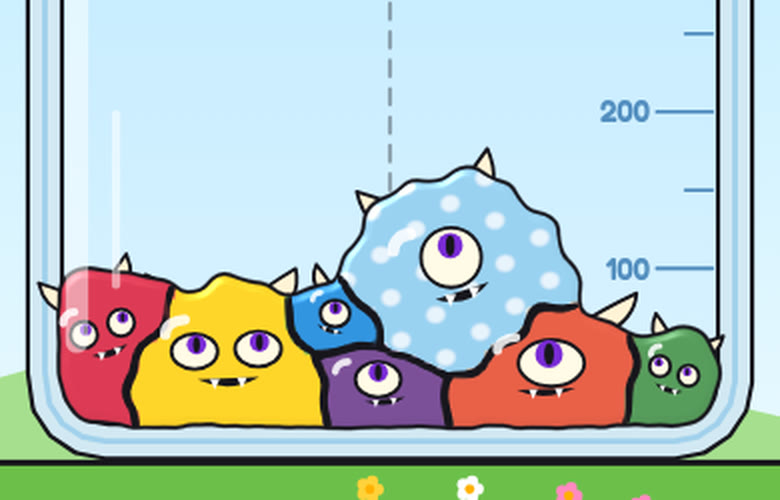
4 Monstrinhos Chifres, ciclope nos níveis ímpares e dentinhos. 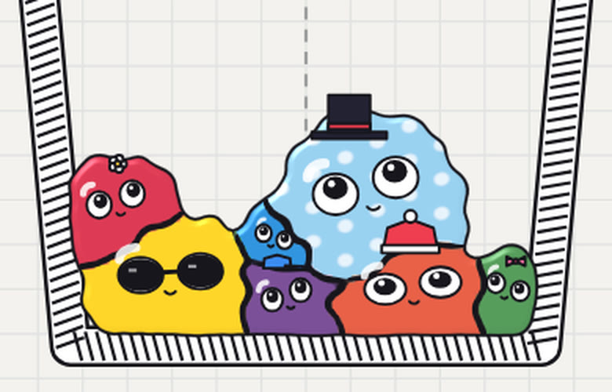
5 Chapéus por nível Do laço à coroa de rei: a evolução aparece no próprio slime. 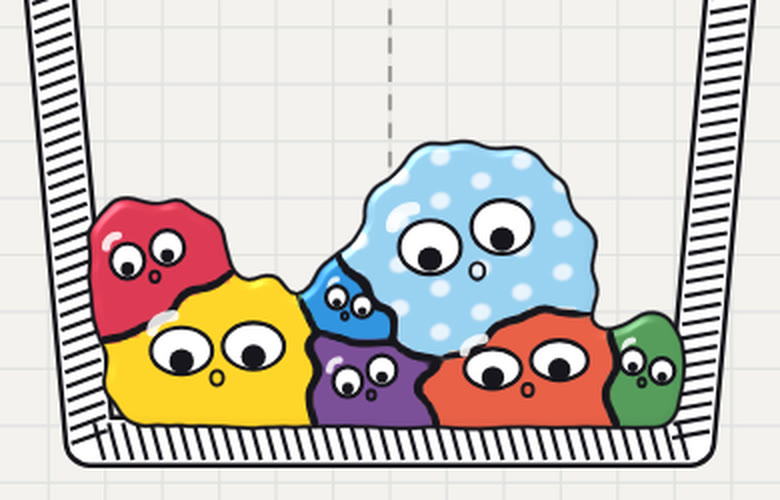
6 Olhos de boneco Pupilas soltas que caem e balançam quando o slime se mexe. 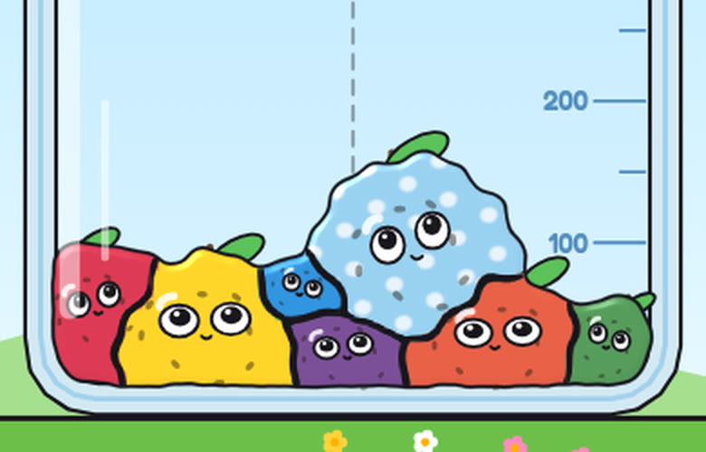
7 Frutinhas Folha, cabinho e sementinhas, com um rosto menor. 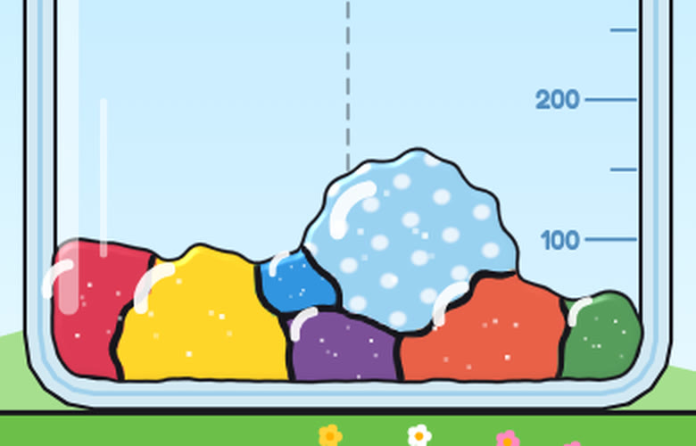
8 Docinho Sem rosto: bala brilhante com cristais de açúcar.
Prévia jogável
Merge Lab
Croma
Duelo
Sua escolha:Béquer · Jardim · Clássico
Copiar a escolha
Voltar ao escolhido
A escolha fica salva neste navegador e vale também quando você abre os modelos pelo hub.